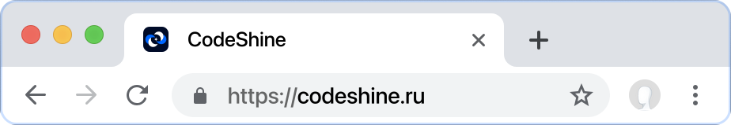
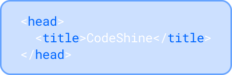
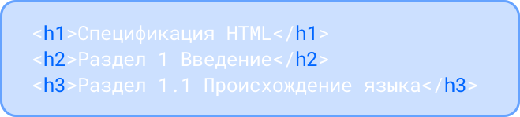
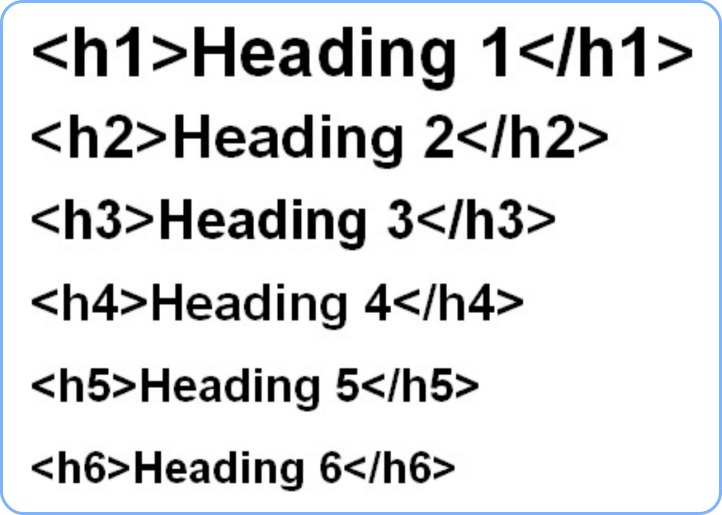

Блок 2. Базовая верстка
на HTML
Простейшая разметка в HTML выглядит следующим образом:

Давайте разберем данный пример:
Простейшая HTML-страница состоит минимум из трёх тегов: <html>, <head> и <body>.
- Тег <html> располагается сразу после объявления типа документа (doctype) и содержит все остальные теги, включая <head> и <body>.
- Тегу <html> обычно добавляют важный атрибут lang(сокращение от английского «language»), в котором задаётся язык документа. Наш сайт будет русскоязычным, поэтому в lang пропишем такое значение:
- Тег <head> хранит важную служебную информацию, а в теге <body> хранится содержание страницы, которое отображается в окне браузера. Все тексты и картинки мы будем добавлять внутрь <body>. В документе теги head и body могут быть использованы только один раз!
Тег title, заголовок страницы
За заголовок во вкладке браузера отвечает парный тег <title>, внутри которого содержится название страницы.
Обычно советуют использовать заголовок от 50 до 80 символов. Такое ограничение существует из-за того, что поисковые системы не могут показать больше символов в качестве заголовка страницы в результатах поисковой выдачи. Заголовок внутри тега <title> отобразится во вкладке в браузере.
А вот пример использования <title> в коде:
Тег link
Тег <link> позволяет подключать файлы стилей, шрифты, подсказывать браузерам следующую (или предыдущую) страницу статьи. Для этого у него есть атрибут href в котором задаётся адрес стилевого файла, а значение stylesheet атрибута rel говорит браузеру, что мы подключаем именно стили, а не что-то другое. Самый распространённый пример — подключение файла CSS к HTML-странице:
Теги h1-h6, заголовки в HTML
Для создания основной структуры текста используют заголовки. В HTML существует целое семейство заголовочных тегов: от <h1> до <h6>. Тег <h1> обозначает самый важный заголовок (заголовок верхнего уровня), а тег <h6> обозначает подзаголовок самого нижнего уровня. Буква «h» в названии тега — это первая буква английского «heading», а то есть заголовок.
На практике в текстах редко встречаются подзаголовки ниже третьего уровня. Поэтому чаще всего используются теги <h1>, <h2> и <h3>:
Поисковые системы придают особое значение заголовкам, также правильно расставленные заголовки важны для доступности документа. Поэтому нужно учиться грамотно использовать заголовки.
Заголовок <h1> — самый важный на странице. В него нужно включать текст, который в целом описывает содержание страницы. Очень важно, чтобы заголовок первого уровня на странице был только один.
Пример заголовков от <h1> до <h6>:
Тег p, параграф
Основную структуру текста создают с помощью заголовков, а более мелкую выстраивают с помощью параграфов (или абзацев). Параграф — это отдельный блок текста, который обычно содержит одну или несколько связанных мыслей. Представь, что ты пишешь статью или рассказ, и каждый новый абзац начинается с новой строки — вот для этого и нужен тег <p>.
Тег section, разделы страницы
Тег <section> используется для создания логических разделов на веб-странице. Представь, что у тебя есть книга, и каждая глава или раздел в этой книге посвящен определённой теме. Тег <section> помогает разделить содержимое страницы на такие тематические блоки.
Тег nav, навигация по сайту
Тег <nav> используется для создания блока навигации на веб-странице. Этот блок содержит ссылки, которые помогают пользователям перемещаться между разделами сайта или внутри одной страницы. Представь, что это меню, которое помогает найти нужную информацию быстрее.
Теги <ul> и <li>:
- <ul>: Это тег для создания неупорядоченного списка (unordered list). Он используется, когда порядок элементов не важен. В примере ниже он используется для создания списка ссылок внутри тега <nav>.
- <li>: Это тег для создания элемента списка (list item). Каждый элемент списка оборачивается в тег <li>. В примере ниже каждая ссылка навигации является элементом списка.
Тег <a>:
- Тег <a> используется для создания гиперссылок, которые позволяют пользователям переходить на другие страницы или разделы внутри одной страницы. Когда тег <a> используется внутри тега <li>, это означает, что каждый элемент списка (<li>) содержит ссылку.
!Гиперссылка — это кликабельный элемент, который перенаправляет пользователя на другую страницу или раздел текущей страницы.
Атрибуты тега <a>:
- href: Это основной атрибут тега <a>, который указывает адрес (URL), на который будет вести ссылка. Например, href="ссылка" или href="#about" для перехода к разделу на той же странице.
Тег div, базовый блочный элемент
Тег <div> — это универсальный контейнер, который используется для группировки элементов на веб-странице. Представь, что это коробка, в которую можно положить разные вещи: текст, изображения, другие контейнеры и т.д. Эта "коробка" помогает организовать и стилизовать контент.
Когда использовать тег <div>:
1. Когда нужно создать контейнер для группировки элементов:
- Что это значит? Представь, что у тебя есть несколько элементов на странице, например, текст, изображения и кнопки. Тег <div> помогает объединить их в одну "коробку". Это удобно, когда нужно управлять всеми этими элементами сразу.
- Пример: Ты хочешь, чтобы текст и изображение всегда были рядом друг с другом. Оберни их в <div>>, и они будут вместе.
2. Когда требуется применить стили или скрипты к группе элементов:
- Что это значит? Иногда нужно изменить внешний вид или поведение нескольких элементов одновременно. С помощью CSS можно задать стили для всего <div>, а с помощью JavaScript — добавить интерактивность.
- Пример: Ты хочешь, чтобы все элементы внутри <div> имели одинаковый фон или чтобы они исчезали при нажатии на кнопку. Оберни их в <div> и применяй стили или скрипты к этому контейнеру.
3. Когда необходимо создать сложный макет страницы:
- Что это значит? Сложный макет — это когда страница разделена на несколько частей, например, на колонки или секции. Тег <div> помогает организовать эти части, делая страницу более структурированной и удобной для восприятия.
- Пример: Ты хочешь создать макет с тремя колонками: одна для меню, вторая для основного контента и третья для рекламы. Используй <div> для каждой колонки, чтобы легко управлять их расположением и стилями.
Тег img, изображение
Тег <img> используется для вставки изображений на веб-страницу. Представь, что ты хочешь добавить картинку на свою страницу — фотографию, логотип или иконку. Тег <img> помогает это сделать.
Атрибуты: У тега <img> есть несколько важных атрибутов, которые помогают управлять изображением:
- src: Указывает путь к изображению. Это может быть ссылка на файл на твоём сервере или в интернете.
- alt: Альтернативный текст, который отображается, если изображение не загружается, как на примере ниже: